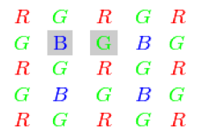

Color conversions
See cv::cvtColor and cv::ColorConversionCodes Todo document other conversion modes
RGB GRAY
Transformations within RGB space like adding/removing the alpha channel, reversing the channel order, conversion to/from 16-bit RGB color (R5:G6:B5 or R5:G5:B5), as well as conversion to/from grayscale using:
and
The conversion from a RGB image to gray is done with:
cvtColor(src, bwsrc, cv::COLOR_RGB2GRAY);
More advanced channel reordering can also be done with cv::mixChannels.
RGB CIE XYZ.Rec 709 with D65 white point
\(X\), \(Y\) and \(Z\) cover the whole value range (in case of floating-point images, \(Z\) may exceed 1).
RGB YCrCb JPEG (or YCC)
where
Y, Cr, and Cb cover the whole value range.
RGB HSV
In case of 8-bit and 16-bit images, R, G, and B are converted to the floating-point format and scaled to fit the 0 to 1 range.
If \(H<0\) then \(H \leftarrow H+360\). On output \(0 \leq V \leq 1\), \(0 \leq S \leq 1\), \(0 \leq H \leq 360\).
The values are then converted to the destination data type:
- 8-bit images: \(V \leftarrow 255 V, S \leftarrow 255 S, H \leftarrow H/2 \text{(to fit to 0 to 255)}\)
- 16-bit images: (currently not supported) \(V <- 65535 V, S <- 65535 S, H <- H\)
- 32-bit images: H, S, and V are left as is
RGB HLS
In case of 8-bit and 16-bit images, R, G, and B are converted to the floating-point format and scaled to fit the 0 to 1 range.
If \(H<0\) then \(H \leftarrow H+360\). On output \(0 \leq L \leq 1\), \(0 \leq S \leq 1\), \(0 \leq H \leq 360\).
The values are then converted to the destination data type:
- 8-bit images: \(V \leftarrow 255 \cdot V, S \leftarrow 255 \cdot S, H \leftarrow H/2 \; \text{(to fit to 0 to 255)}\)
- 16-bit images: (currently not supported) \(V <- 65535 \cdot V, S <- 65535 \cdot S, H <- H\)
- 32-bit images: H, S, V are left as is
RGB CIE L*a*b*
In case of 8-bit and 16-bit images, R, G, and B are converted to the floating-point format and scaled to fit the 0 to 1 range.
where
and
This outputs \(0 \leq L \leq 100\), \(-127 \leq a \leq 127\), \(-127 \leq b \leq 127\). The values are then converted to the destination data type:
- 8-bit images: \(L \leftarrow L*255/100, \; a \leftarrow a + 128, \; b \leftarrow b + 128\)
- 16-bit images: (currently not supported)
- 32-bit images: L, a, and b are left as is
RGB CIE L*u*v*
In case of 8-bit and 16-bit images, R, G, and B are converted to the floating-point format and scaled to fit 0 to 1 range.
This outputs \(0 \leq L \leq 100\), \(-134 \leq u \leq 220\), \(-140 \leq v \leq 122\).
The values are then converted to the destination data type:
- 8-bit images: \(L \leftarrow 255/100 L, \; u \leftarrow 255/354 (u + 134), \; v \leftarrow 255/262 (v + 140)\)
- 16-bit images: (currently not supported)
- 32-bit images: L, u, and v are left as is
The above formulae for converting RGB to/from various color spaces have been taken from multiple sources on the web, primarily from the Charles Poynton site http://www.poynton.com/ColorFAQ.html
Bayer RGB
The Bayer pattern is widely used in CCD and CMOS cameras. It enables you to get color pictures from a single plane where R,G, and B pixels (sensors of a particular component) are interleaved as follows:
The output RGB components of a pixel are interpolated from 1, 2, or 4 neighbors of the pixel having the same color. There are several modifications of the above pattern that can be achieved by shifting the pattern one pixel left and/or one pixel up. The two letters \(C_1\) and \(C_2\) in the conversion constants CV_Bayer \(C_1 C_2\) 2BGR and CV_Bayer \(C_1 C_2\) 2RGB indicate the particular pattern type. These are components from the second row, second and third columns, respectively. For example, the above pattern has a very popular “BG” type.
See also:
cv::COLOR_BGR2GRAY, cv::COLOR_RGB2GRAY, cv::COLOR_GRAY2BGR, cv::COLOR_GRAY2RGB
cv::COLOR_BGR2XYZ, cv::COLOR_RGB2XYZ, cv::COLOR_XYZ2BGR, cv::COLOR_XYZ2RGB
cv::COLOR_BGR2YCrCb, cv::COLOR_RGB2YCrCb, cv::COLOR_YCrCb2BGR, cv::COLOR_YCrCb2RGB
cv::COLOR_BGR2HSV, cv::COLOR_RGB2HSV, cv::COLOR_HSV2BGR, cv::COLOR_HSV2RGB
cv::COLOR_BGR2HLS, cv::COLOR_RGB2HLS, cv::COLOR_HLS2BGR, cv::COLOR_HLS2RGB
cv::COLOR_BGR2Lab, cv::COLOR_RGB2Lab, cv::COLOR_Lab2BGR, cv::COLOR_Lab2RGB
cv::COLOR_BGR2Luv, cv::COLOR_RGB2Luv, cv::COLOR_Luv2BGR, cv::COLOR_Luv2RGB
cv::COLOR_BayerBG2BGR, cv::COLOR_BayerGB2BGR, cv::COLOR_BayerRG2BGR, cv::COLOR_BayerGR2BGR, cv::COLOR_BayerBG2RGB, cv::COLOR_BayerGB2RGB, cv::COLOR_BayerRG2RGB, cv::COLOR_BayerGR2RGB